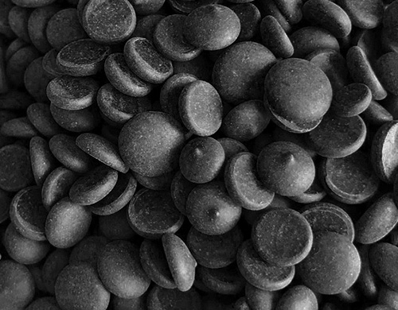
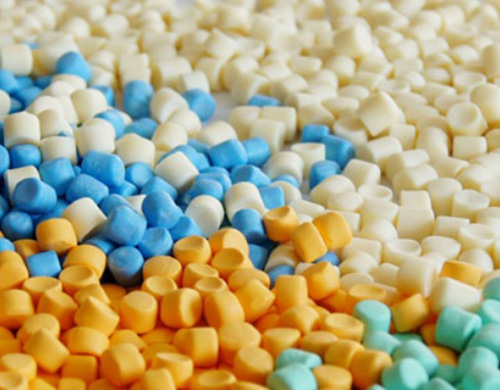
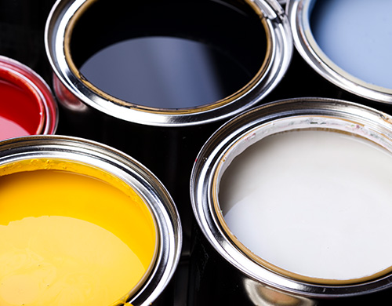

home > 제품소개 > 정밀화학
정밀화학
- 정밀화학SPECIALTY CHEMICALS
- 정유 및 석유화학 등의 기초화학과 대비되는 개념으로, 각종 분야의 원부자재를 생산합니다. 고도의 기술이 필요한 화학 공업 분야이고 부가 가치가 높고 소자본으로 생산이 가능하며, 다양한 종류의 물품을 소량 생산할 수 있는 것이 특징입니다.
사업 정보
- 용도
- • 고무나 합성수지 제품의 산화현상을 방지하기 위한 산화방지제를 생산하는 사업입니다.
- 특징
- • 금호석유화학은 산화방지제 분야에서 합성고무 및 합성수지 분야에 널리 사용되는 다양한 페놀계, 아민계 산화 방지제를 생산, 공급하고 있으며, 고객의 요구에 부합하는 Total Solution을 제공함으로써 고객 만족에 최선을 다하고 있습니다.
- • 지속적으로 강화되는 환경 규제에 대응하고자 친환경 대체 물질 개발을 위한 내분비 호르몬 교란 물질인 노닐페놀 대체제를 개발하여 건축용, 선박용 에폭시 도료, 접착제 분야에서 Global 기술 및 제품 선도를 하고 있습니다.
- • 또한 고부가 신소재 개발 연구를 통해 지속가능한 화학소재 분야를 향한 끊임없는 연구 개발을 하고 있습니다.
| SPECIALTY CHEMICALS |
|---|
| 88,800 |
제품 종류
-

- 노화방지제Antioxidants
- 제품정보 더보기 더보기
산소나 오존이 고무와 반응하여 고분자 사슬을 절단하거나 가교화로 고무 노화를 촉진시키는 연쇄반응을 차단해주는 물질을 말합니다. 당사는 착색성이 있어 주로 타이어용 고무에 사용하는 방향족 아민계통과 제품 색상을 오염시키지 않는 페놀류 제품을 생산하고 있습니다.
-

- 가황촉진제Vulcanization Accelerators
- 제품정보 더보기 더보기
고무 가황 시 반응 시간의 단축 또는 가황제의 사용량을 줄이기 위해 사용하는 물질로 주로 유기촉진게를 사용하며 가황속도가 매우 빠른 Thiuram계, 비교적 빠른 Sulfenamide계, 중가정도의 속도를 나타내는 Guanidine계 촉진제를 공급하고 있습니다.
-

- 페인트첨가제Paint Additives/Diluent
- 제품정보 더보기 더보기
Kumanox-3110, 3111 제품은 에폭시페인트 diluent 첨가제로서 기존 Nonylphenol이 갖고 있는 화학적 특징을 포함하며, NP의 위험성을 배제한 환경친화형 제품입니다.
- 노화방지제Antioxidants
- 산소나 오존이 고무와 반응하여 고무 노화를 촉진시키는 연쇄반응을 차단해주는 물질로서 고무에 대한 용해도가 크고 반응성이 없으며, 가황을 방해하지 않아야 합니다. 당사는 착색성이 있어 주로 타이어용 고무에 사용하는 방향족 아민계통과 제품 색상을 오염시키지 않는 페놀류 제품을 생산하고 있습니다.
- 용도
- • 방향족 아민계 : 타이어용 합성고무 • 페놀계 : 색상용 합성고무, 합성수지
- 특징
- • 방향족 아민계 : 일광/Ozone균열 방지에 특히 효과가 좋고 굴곡균열 방지에도 유효하며 Blooming성이 있으나 다량 배합이 가능 • 페놀계 : 분자량이 큰 비오염성 산화방지제 또는 1,2차 동시 산화방지제
- 제품분류
- • 노화방지제(Antioxidant) : KUMANOX 13L, KUMANOX 13P, KUMANOX 3C (IPPD), KUMANOX SP, KUMANOX SP-N, KUMANOX 3020, KUMANOX 5010L